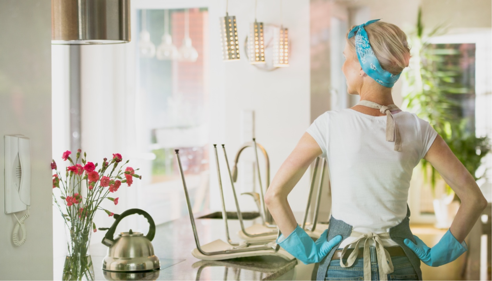
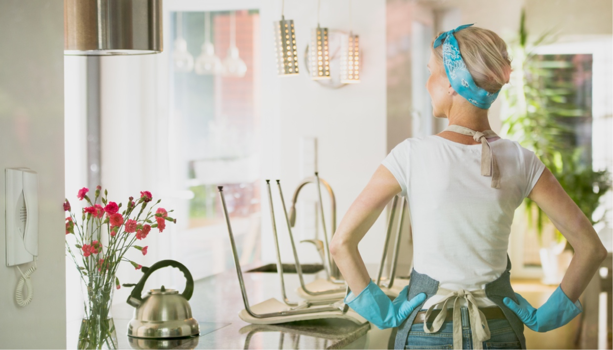

Общие
правила
правила
 

Основные правила:
Правило №1
Микрофибра
Правило №3
Натуральные средства
Правило №3
Утилизация отходов
Важно!
*Экологичная уборка может уменьшить загрязнение окружающей среды,
а также улучшить качество воздуха в помещении.
Общие правила для экологичной уборки дома.
При уборке помещений мы часто используем химические вещества,
которые вредны для нашего здоровья и окружающей среды.
Но есть альтернативы! В этой статье мы расскажем
о пяти лайфхаках, которые научат вас убираться без вреда
для экологии.
Используйте микрофибру для уборки
Микрофибра — это ткань, которая оспособна очень хорошо удалять пыль
и грязь без использования химических средств. Она также
может быть использована несколько раз, что позволит сэкономить
деньги и ресурсы. Попробуйте использовать микрофибру
для уборки столов, полов, мебели и т.д.
Переходите на натуральные средства уборки
Химические вещества, использующиеся для уборки, часто
оказываются вредными для окружающей среды. Попробуйте перейти
на натуральные средства для уборки, такие как уксус, сода
и лимонный сок. Они могут быть не менее эффективными,
чем химические средства, но без вреда
для здоровья.
Помните о переработке отходов
Помните об переработке отходов: отделяйте пластик, стекло,
бумагу и другие материалы, которые можно переработать. Это
поможет уменьшить количество отходов, которые попадают
на свалку.
Используйте эко-сумки для мусора
Использование пластиковых мусорных пакетов является плохой
привычкой, которая наносит вред окружающей среде. Попробуйте
эко-сумки для мусора, которые могут быть переиспользованы
множество раз. Это не только уменьшит количество пластиковых
отходов, но и поможет сэкономить деньги на покупку
новых пакетов.
Избавляйтесь от лишних вещей
При уборке квартиры мы часто сталкиваемся с проблемой
переполненных шкафов и комодов. Но выбрасывать все лишнее
в мусор не самый экологичный вариант. Попробуйте отдать
ненужные вещи на благотворительность или перепродать их через
интернет. Это не только поможет избавиться от ненужных вещей,
но и может принести дополнительный доход.
МЫ В СОЦ СЕТЯХ